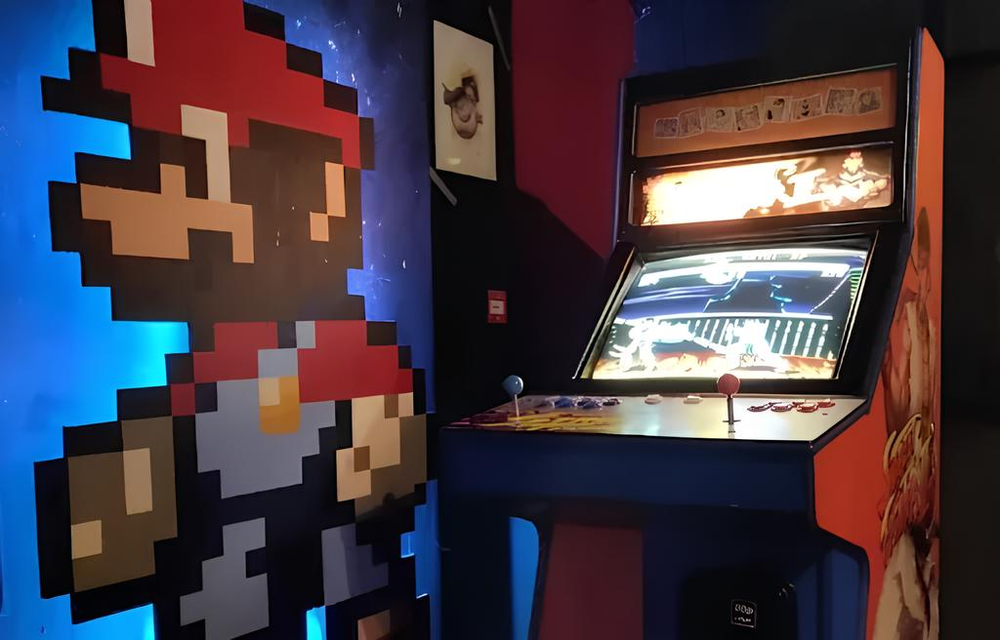
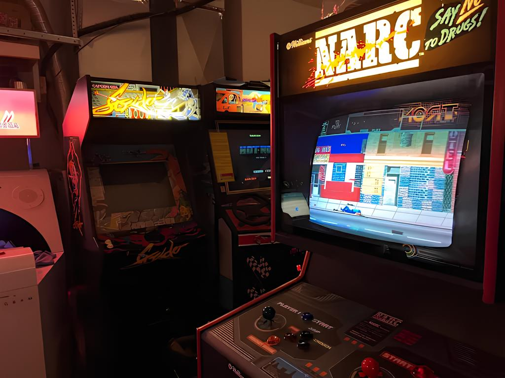
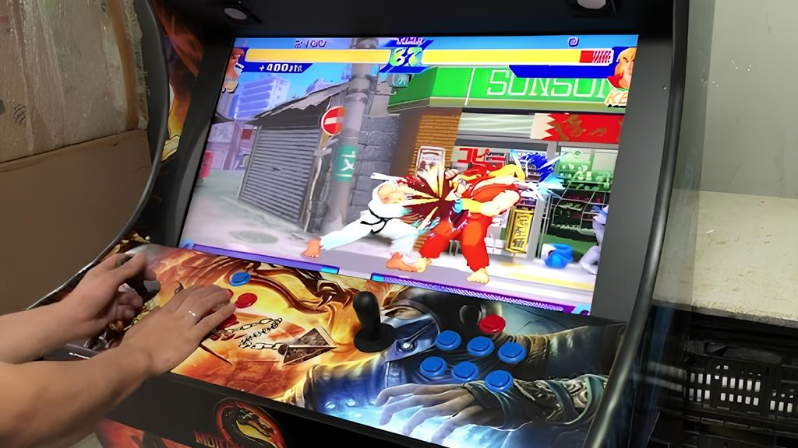
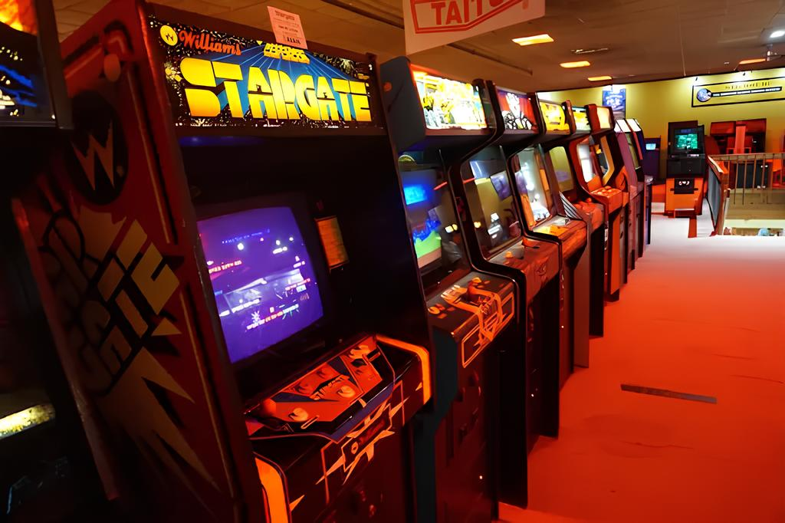
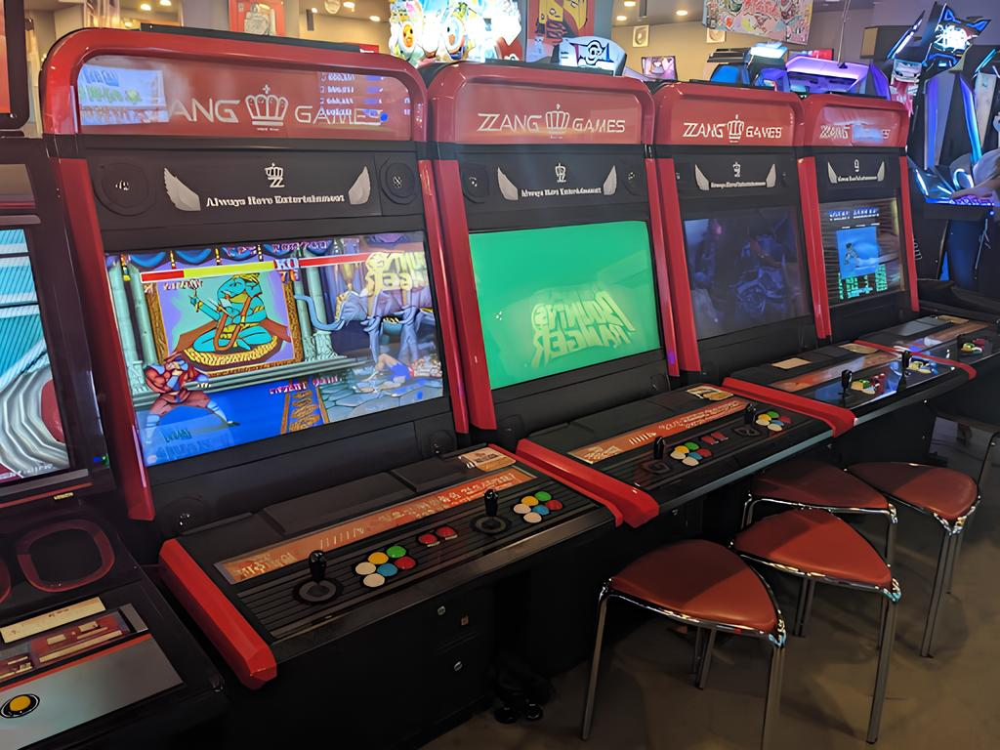
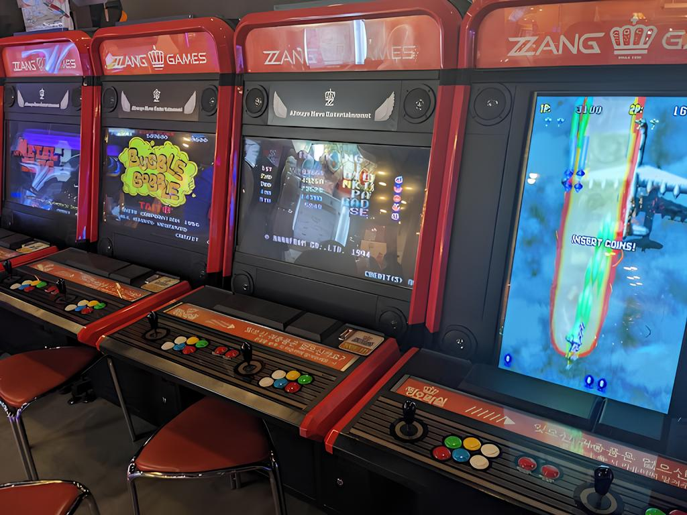

Sobre
Mais do que um simples espaço de entretenimento, o fliperama se estabelece como um ponto de encontro cultural, um verdadeiro templo da interação humana com a tecnologia. Criado na virada dos anos 70 para os 80, ele não apenas trouxe jogos, mas transformou o ato de jogar em uma experiência coletiva, desafiadora e imersiva. Nascido da inovação, seu propósito foi muito além de uma tela iluminada; foi o convite para explorar novas realidades, onde cada ficha se convertia em uma porta para um novo universo. A pioneira revolução digital que o fliperama trouxe, com títulos como Space Invaders, Pac-Man e Donkey Kong, estabeleceu a base de uma nova forma de diversão. Ele inaugurou o conceito de competição direta e interação social instantânea, oferecendo mais do que um simples jogo: ofereceu um palco para a criação de histórias e rivalidades. Durante sua ascensão nas décadas de 80 e 90, o fliperama se consolidou como um fenômeno social, onde amigos se reuniam, novos desafios surgiam e a convivência era marcada por risadas, frustração e momentos de êxtase. Em um cenário de gráficos 2D e sons característicos, as pessoas começaram a competir por recordes e glórias nas listas de alta pontuação, criando uma cultura de desafios amigáveis, onde a busca pela melhor marca era tão importante quanto o prazer do jogo em si. Campeonatos de arcade se tornaram eventos memoráveis, e o fliperama se transformou em uma arena para os destemidos, onde cada partida trazia a possibilidade de se tornar um ícone local. Com máquinas como Street Fighter II e Mortal Kombat, o conceito de rivalidade foi elevado a um novo patamar, com torneios e comunidades que transcenderam a tela para se tornar experiências imersivas e quase épicas. Ao longo dos anos, a cultura do fliperama floresceu, construindo um ecossistema vibrante de jogadores, artistas e desenvolvedores. Não se tratava mais de apenas jogar, mas de criar e viver uma história em cada partida. Era a essência da liberdade criativa, onde novos mundos eram revelados a cada esquina, e os limites da imaginação eram continuamente esticados. O fliperama se tornou a alma do jogo, sendo mais do que apenas um lugar, mas uma experiência transcendental, onde se fundiam desafio, técnica e comunidade. Títulos icônicos como Galaga, Asteroids, Frogger, e Pac-Man não só dominaram os arcades, mas entraram para a cultura popular, tornando-se referência em design de jogos e deixando uma marca indelével na história do entretenimento eletrônico. Na década de 90, a sua evolução se consolidou com o advento de jogos de luta e simuladores, criando uma nova geração de jogadores e rivalidades. O fliperama, com suas máquinas de jogos altamente sofisticadas, perpetuou-se como um ícone cultural, um monumento da era de ouro dos games. Máquinas como Time Crisis, Daytona USA, Virtua Fighter e Tekken mudaram a percepção de como jogos de arcade poderiam oferecer experiências viscerais e imersivas, com gráficos revolucionários e controles mais dinâmicos. O fliperama, então, passou a ser mais que um centro de jogos, mas um ponto de convergência social, onde até desconhecidos formavam alianças e amizades, alimentados pela paixão pelos jogos. Embora os consoles domésticos tenham desafiante e inevitavelmente invadido esse território, a essência do fliperama nunca desapareceu. Ele se transformou, se adaptou e, hoje, continua vivo em bares e eventos, onde o espírito de competição e diversão permanece intacto. O renascimento dos barcades (fliperamas dentro de bares), a popularização de máquinas retrô e o crescimento dos campeonatos de arcade online trouxeram uma nova geração de jogadores para o ambiente que foi a alma do entretenimento nos anos 80 e 90. A memória afetiva do fliperama ressurge, e seus jogos clássicos continuam a reunir tanto os jogadores que viveram sua era de ouro quanto os novos entusiastas que buscam entender o impacto que esses jogos tiveram na evolução dos videogames. Mais do que máquinas, os fliperamas são tesouros imortais de uma era única, onde o que importava não eram os gráficos ou as tecnologias, mas as memórias que se criaram e as emoções que ainda fazem vibrar aqueles que, em um tempo distante, faziam fila para a próxima ficha. Hoje, o fliperama continua sendo um símbolo de resistência, um testemunho de como a busca pelo desafio e pela diversão nunca perde seu encanto. E assim, ele persiste como um legado imortal do entretenimento digital, sempre com algo a ensinar sobre o valor da competição saudável, da comunidade e da magia simples de jogar.
Fotos de Arcades






Tomohiro Nishikado
Tomohiro Nishikado consagrou-se não apenas como um pioneiro brilhante, mas como o arquiteto da era de ouro dos videogames. Nascido em 31 de março de 1944, no Japão, sua formação em engenharia o impulsionou a explorar a interseção entre eletrônica e entretenimento com uma visão revolucionária. Ingressando na Taito em 1968, Nishikado destacou-se rapidamente ao desenvolver seus primeiros jogos eletromecânicos, boa parte deles projetos de complexo design técnico para a época. Sua mente inovadora e atenção meticulosa aos detalhes o levaram a criar em 1978 o icônico jogo "Space Invaders", realizado sozinho não só no design e programação, mas também no desenvolvimento do hardware do arcade, que revolucionou o mercado mundial e deu início à era de ouro dos videogame.Nishikado não apenas desvendou a tecnologia por trás dos primeiros jogos de arcade, mas também inovou ao criar experiências imersivas e divertidas que conquistaram jogadores pelo mundo inteiro. Sua habilidade em combinar arte, som e engenharia em um produto único mostra sua visão multidisciplinar e seu legado na história dos jogos eletrônicos.Essa trajetória reflete uma combinação de engenhosidade técnica e sensibilidade criativa, que fez de Nishikado um verdadeiro ícone da indústria do entretenimento interativo.